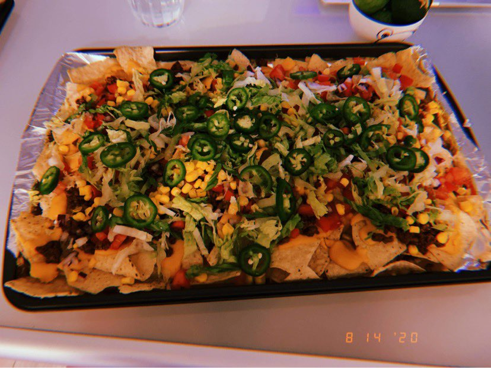
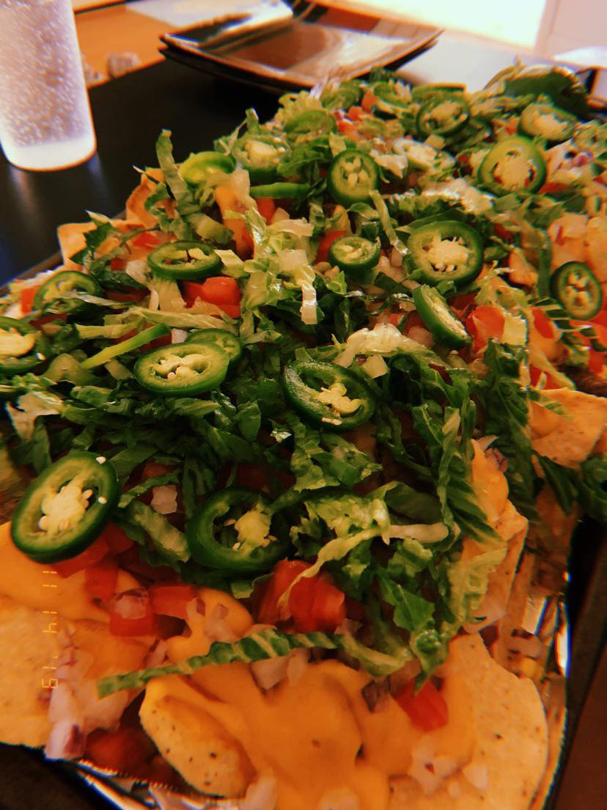

For this recipe we will be making Nachos! We will begin by making our nacho cheese, then pouring it over our tray of nachos.
We will then be adding the toppings we desire. I will first give the recipe for the nacho cheese then the toppings
that I usually like to add on top.

Nacho Cheese Recipe

- 8oz block of sharp cheese
- 12oz evaporated milk
- 1TB corn starch
- 1tsp garlic powder
- 1tsp onion powder
- 1/2tsp cumin
- 1/4tsp cayenne (Can add more or less depending on spice level wanted)
- (Optional) milk for thinning the sauce
Notes
- Make sure to stir thoroughly as you cook all the ingredients so the cheese doesn't burn
- As it cools it will become more thick, but it is really easy to heat up
- Use a block of good quality sharp cheese as preshredded cheese may affect your results
- I always save my leftovers in the fridge, and when I want more I just reheat it from a pot/pan
Toppings
- 2-3 Tomatoes
- 1/2 Red Onion
- 1 Romaine Lettuce
- 2 Cans of corn
- Limes
- (Optional) Jalapenos, but it adds a good amount of flavor
- Choice of meat (Steak/1lb Ground Beef) [I have even used pulled pork!]